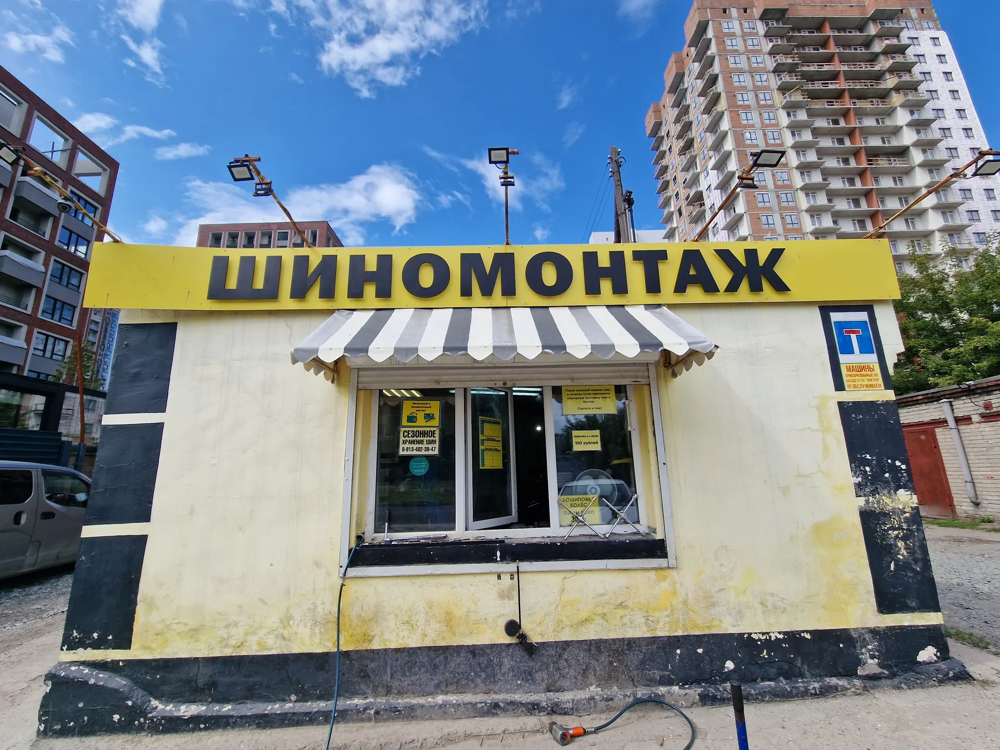
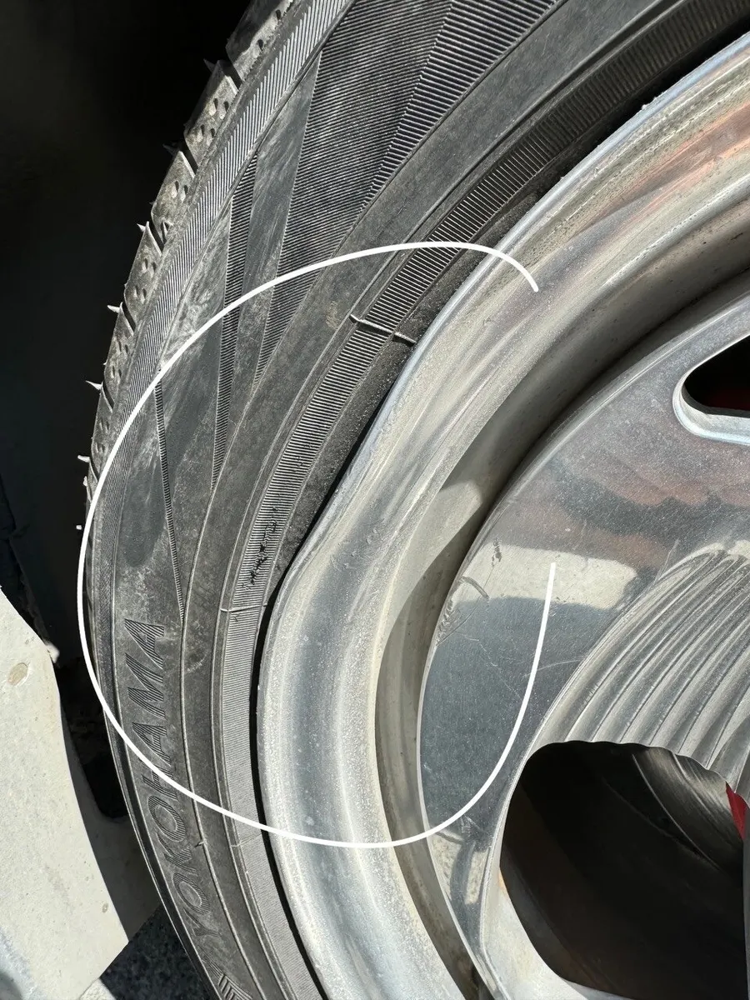
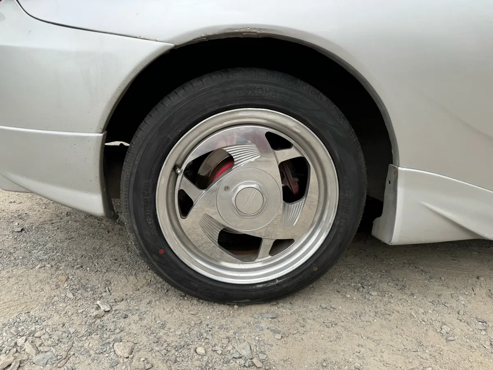
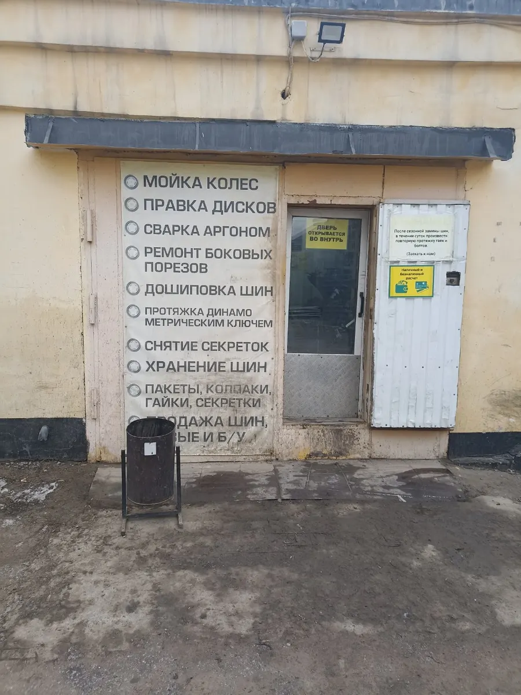
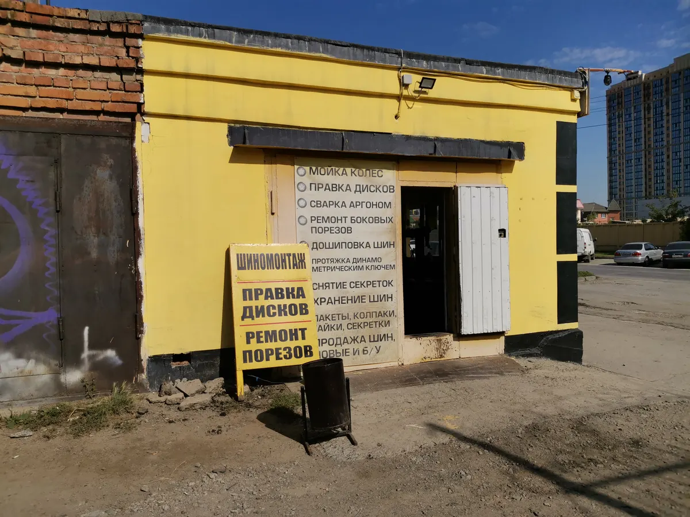
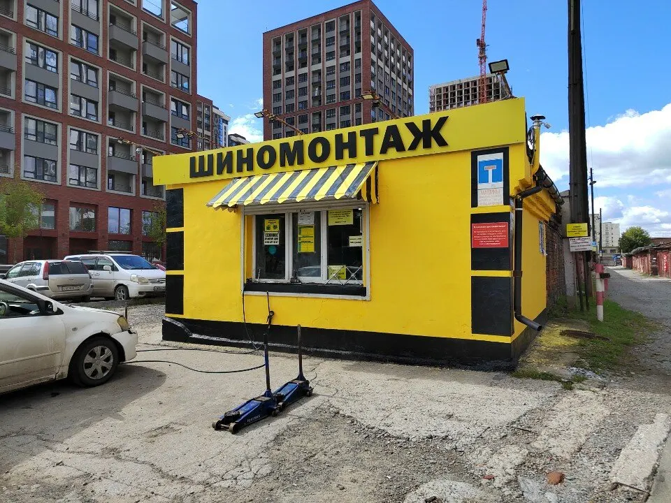
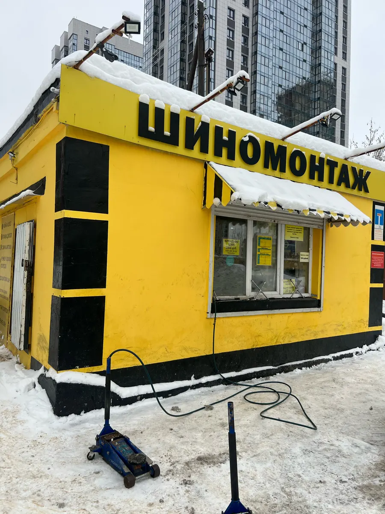

Шиномонтаж · правка дисков · Новосибирск
Правка стальных и литых дисков, сварка аргоном – и шиномонтаж
Семьи Шамшиных, 93А – ежедневно с 9 до 21. Правят стальные диски (клиент пишет: "Нигде не берутся"), варят диски аргоном, ремонтируют грыжи, хранят колёса. Достаточно позвонить.
- Правка стальных и литых дисков
- Сварка дисков аргоном
- Ежедневно с 9 до 21, оплата картой

Услуги
Услуги – по отзывам клиентов и фото с карточки на Яндекс.Картах. Стоимость – по телефону.
Правка и сварка дисков
- Правка стальных дисковв том числе несколько дисков сразууточнить
- Правка алюминиевых (литых) дисковуточнить
- Сварка дисков аргономуточнить
Шины и колёса
- Шиномонтажлегковые, отечественные и импортныеуточнить
- Ремонт шин и грыжгерметик, проверкауточнить
- Балансировкаможно смотреть на стендуточнить
- Мойка колёс перед шиномонтажомуточнить
- Затяжка гаек динамометрическим ключомуточнить
Хранение
- Сезонное хранение колёсуточнить
Цену называют по телефону: расскажите, что с колесом или диском и сколько их.
Как это проходит
- 01
Звоните
+7 (905) 956-44-69, ежедневно с 9 до 21. Расскажите, что с колесом или диском.
- 02
Привозите – посмотрят и объяснят
«Смотрел колесо, оказалось грыжа и диск немного деформирован, показал, объяснил как поступить», – пишет Анна Нилова.
- 03
Можно смотреть за работой
«Можно наблюдать за процессом лично, цифры на стенде расшифруют доступным языком», – Константин, отзыв на Картах.
- 04
Без навязывания услуг
«Все по делу, все понятно. Мастер все заменил, без навязывания услуг», – Марина Блавацкая.






Что делают здесь
Правка стальных и литых дисков
«Обратилась привести диски в исходное положение… На следующий день уже все сделали», – All Yours.
Сварка аргоном
«Варили диск аргоном. На одном шиномонтаже отказались делать. На этом сделали без проблем», – Сергей Осипов.
Ремонт шин и балансировка
Грыжи, боковые порезы, герметик, балансировка на стенде.
Хранение колёс
Есть сезонное хранение колёс: можно оставить комплект до следующего сезона.
Отзывы с Яндекс.Карт
«Обратилась привести диски в исходное положение, знатно погнулись, и посоветовали это место, цены приемлемые, была приятно удивлена. На следующий день уже все сделали, рекомендую. Выглядят так, как будто, я ездила и даже бордюр не задевала)»
All Yours · 22 июля 2024
«Отличный сервис. Варили диск аргоном. Последний раз пробил колесо жёстко. На одном шиномонтаже отказались делать. На этом сделали без проблем. Рекомендую.»
Сергей Осипов · 29 августа 2024
«Хорошие ребята, знающие своё дело. Расскажут, покажут, подскажут. Можно наблюдать за процессом лично, цифры на стенде расшифруют доступным языком. Есть сезонное хранение колёс. Рекомендую»
Константин · 12 октября 2023
Отзывы с карточки на Яндекс.Картах, без правок.
Частые вопросы
Правите стальные диски?
Да. Клиент пишет в отзыве: нужно было выпрямить стальной диск, и не один, а целых три – "нигде не берутся, везде делают только литые". Здесь сделали. Алюминиевые (литые) диски тоже правят.
Варите диски аргоном?
Да, в отзывах клиенты пишут: "Варили диск аргоном". Стоимость и сроки – по телефону.
Можно смотреть, как работают с колесом?
Да: в отзыве пишут, что можно наблюдать за процессом лично, а цифры на стенде мастер объяснит.
Есть ли хранение колёс?
Да, есть сезонное хранение колёс.
Можно ли оплатить картой?
Да, на карточке отмечена оплата картой.
Где вы находитесь?
Новосибирск, улица Семьи Шамшиных, 93А. Остановка "Улица Семьи Шамшиных" – 150 метров, метро "Маршала Покрышкина" – 940 метров. Работаем ежедневно с 9:00 до 21:00.
Позвоните – подскажут по вашему колесу
- Адрес
- ул. Семьи Шамшиных, 93А, Новосибирск
- Часы
- Ежедневно с 9:00 до 21:00
- Телефон
- +7 (905) 956-44-69